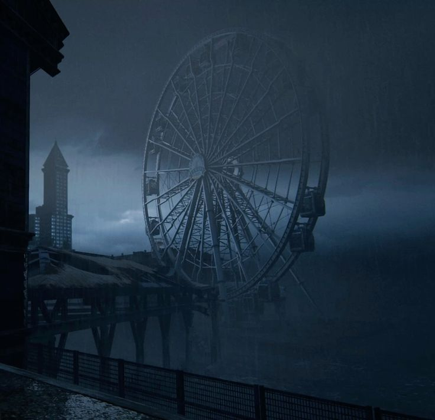
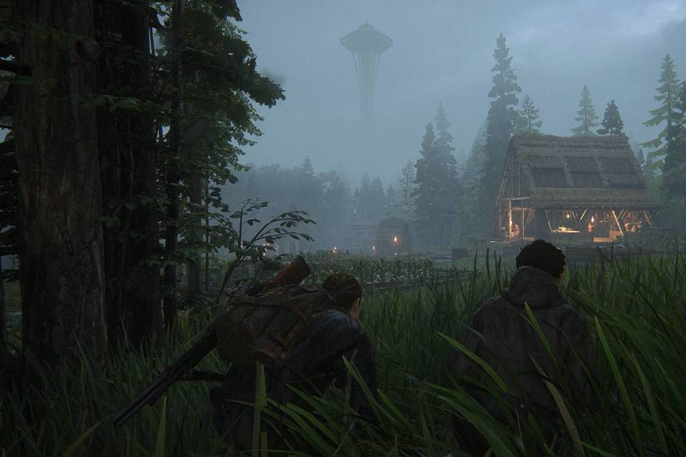
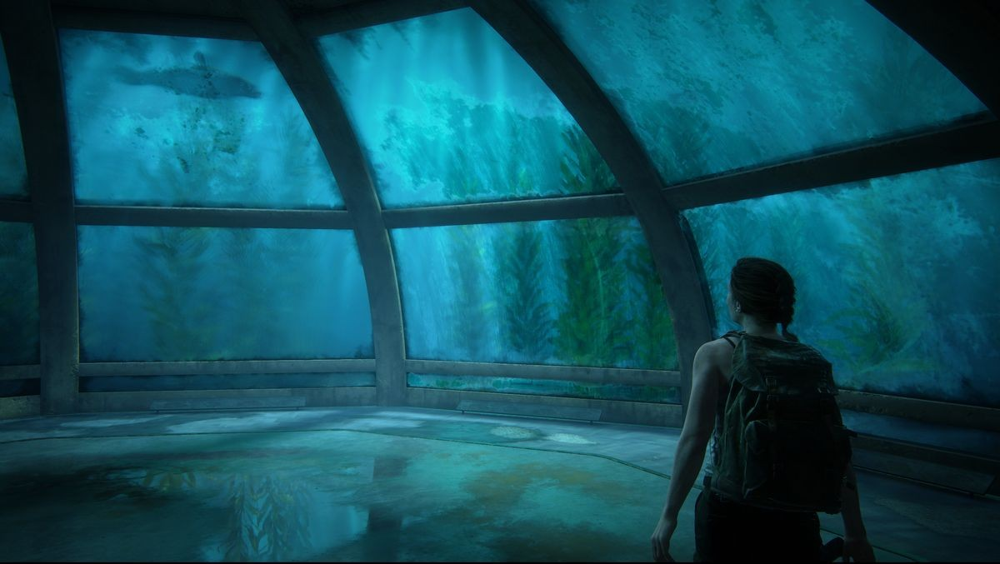

One of the most recognizable landmarks featured in The Last of Us Part II is the Seattle Great Wheel. In real life, the Ferris wheel sits along the waterfront in Seattle and is a bright, lively attraction. In the game, however, it becomes part of a much darker landscape, surrounded by abandoned buildings and stormy skies.


The Space Needle is one of the most famous landmarks in Seattle. While it can still be seen in the distant skyline of the game, it is no longer a destination. Instead, it becomes just another forgotten structure in a city overtaken by nature and decay.


In real life, the aquarium is a popular attraction along the waterfront. In the game, however, the aquarium has been abandoned and repurposed. It becomes a quiet refuge used by characters trying to survive in a dangerous world.